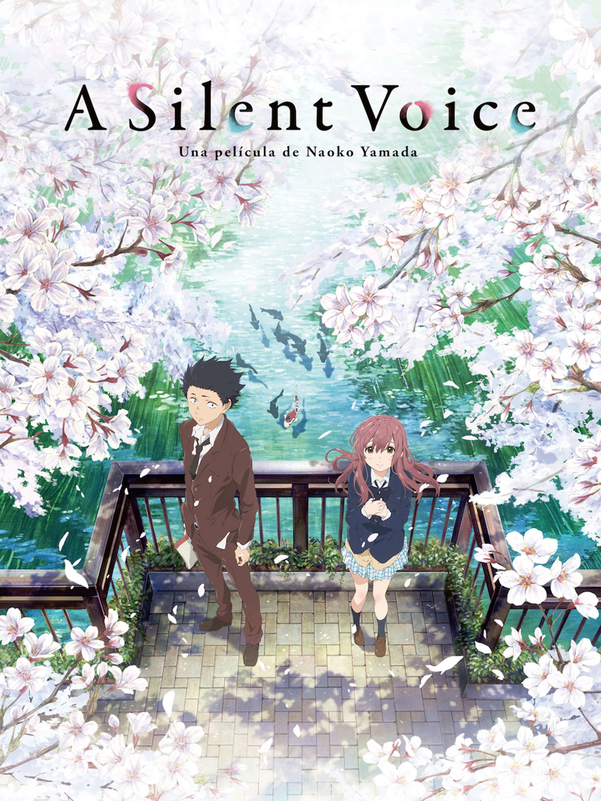

🎭 Filtrar por género
Jujutsu Kaisen
Anime cargado de acción sobrenatural, hechicería y batallas impresionantes.
Horimiya
Una comedia romántica fresca y emotiva con personajes entrañables.

A Silent Voice
Un drama conmovedor sobre bullying, redención y segundas oportunidades.